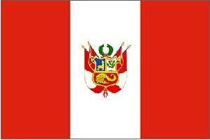
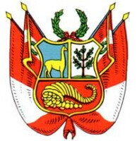
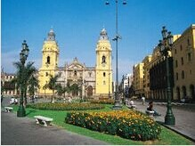
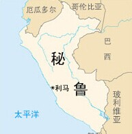

- 秘鲁国旗
- 秘鲁国徽
- 秘鲁标志性建筑
- 秘鲁地理位置
秘鲁概况
秘鲁是南美洲西部的一个国家
人口概况
秘鲁2010年人口约2800万, 是南美洲人口第4多的国家。1950年到2000年间, 该国的人口增长率从2.6%下降到1.6%；2050年估计人口将达到4200万。截至2005年, 72.6%人口居于城市地区, 27.4%居于郊区。1993年人口普查人口超过200,000的城市有利马、阿雷基帕、特鲁希略、奇克拉约、皮乌拉、伊基托斯、钦博特、库斯科和万卡约。
秘鲁经济
秘鲁是传统农矿业国, 属拉美中等水平。矿产丰富, 石油自给有余。工业以加工和装配业为主。2005年工业增长率为7%, 矿业增长率为7.4%。
藤森执政期间, 实行私有化政策, 并在物价、税收等方面进行了一系列改革, 经济形势逐步好转。托莱多政府实行“恢复经济政策”, 宏观经济运行平稳, 近5年来年均增长率达5%。2005年, 经济继续增长, 通膨降低, 贸易顺差加大, 资本市场更加健全, 投资者对秘前景普遍看好。但经济发展的成果未能惠及广大下层民众, 贫富分化等问题未得到根本扭转。加西亚总统就职后, 表示新政府将基本延续现行经济发展模式, 实行严格的财政政策, 增加对基础设施的投入, 积极吸引投资, 加快经济发展速度；重视贫困地区经济发展, 实施扫盲计划；对能源和矿业企业加征高额利润税；增加就业和改善劳工权利。
2005年主要经济数字:
国内生产总值(GDP):757.2亿美元
人均国内生产总值:2482美元
国内生产总值增长率:6.67%
汇率:1美元＝3.296新索尔。
通货膨胀率:1.43%
失业率:9.6%(利马)
外交关系
奉行独立自主的外交政策, 将巩固民主、人权、民主安全、地区一体化、贸易和投资、护侨和对外文化宣传作为外交优先目标。秘主张遵循国际法、联合国宪章和泛美体系的准则, 推动国际和平与安全, 尊重人权；强调外交为经济发展服务；重视发展同周边及其它拉美国家关系, 积极参与地区一体化进程；加强同美国、加拿大和欧盟等工业化国家以及亚太国家的关系；主张在反毒、反恐、反腐和扫除贫困等领域加强国际合作。秘现与129个国家建立了外交关系。
秘是不结盟运动、七十七国集团、十五国集团、太平洋经济合作理事会、里约集团、拉美一体化协会、拉美经济体系、亚马孙合作条约、南美洲国家共同体、安第斯共同体、南太平洋常设委员会等国际和地区组织的成员国。1998年11月, 秘鲁正式加入亚太经济合作组织。
经贸往来
秘鲁实行自由贸易政策。2005年出口额占国内生产总值的比例为22.3%。
主要出口矿产品和石油、农牧业产品、纺织品、渔产品等。近年来, 非传统产品的出口上升到占全国出口的四分之一左右。2005年, 秘传统产品出口127.21亿美元, 同比增长37.
[斗牛比赛]
斗牛比赛
8%, 其中矿产品和石油出口110.87亿美元, 鱼粉出口11.47亿美元；非传统产品出口42.79亿美元, 同比增长22.7%, 其中农产品出口10.09亿美元, 纺织品出口12.74亿美元。进口工业原料、资本货和消费品等。主要贸易伙伴为美国、中国、智利和加拿大。